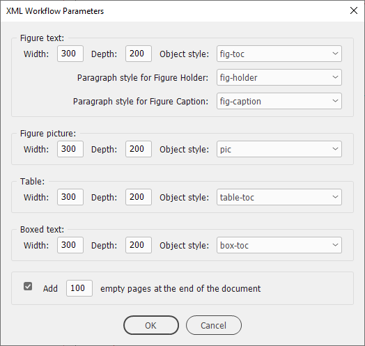
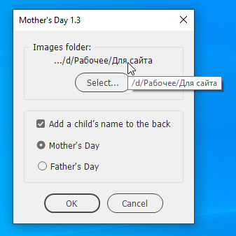

Collection of dialog boxes
Creating the dialog box is an important part of almost every script. Oftentimes I find myself reinventing the wheel and writing it from scratch. Here I am going to make a collection of dialogs from my scripts that can be used as a starting point.
In most cases, in my dialogs, the selected settings are saved when the user clicks the OK button for modal dialog windows or closes the dialog for non-modal ones. For this purpose, I use the global object called ‘set’ which is serialized with the toSource method and stored in the application object using the insertLabel method. Also, the settings can be stored with the document instead of the app. The key is my prefix — Kas_ — followed by the script’s name to avoid collision of settings’ names. On the next run, the script deserializes the saved settings in the GetDialogSettingsfunction. If the script is run for the first time, the new ‘set’ object with default settings is created. You can reset to defaults by inserting the empty string using the same key, like so:
var scriptName = "Find Text in Location - 2.1";
app.insertLabel("Kas_" + scriptName, "");
XML Workflow Parameters

Click here to download this snippet.
Mother's Day script dialog box
It is important to use absoluteURI instead of fsName and forward slashes in the TrimPath function to avoid Mac/PC issues and encoding problems with non-English languages and spaces in file/folder names/paths.

Click here to download this snippet.